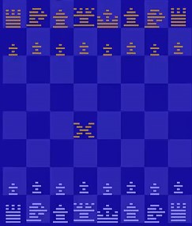

Gaming goes back a long way. People presume that ‘Senet’ is the first one,
dating back to 3500 B.C. and it was played by people in Ancient Rome.
Since then,
many, many games have released and improved progressively
over time. And with technology
for video games being released in 1958, it made a gateway for Board Games to be converted
to Video Games. In 1977,
a Blackjack game was made for the Atari 2600, by ‘Bob Whitehead’.
This release is the first game converted to video games that I can find.
Bob Whitehead used to make games for the Atari 2600, the first one being
‘Starship’, he made many
board game conversions throughout his time
making games. The first conversion he made was ‘Blackjack’,
and it’s
just what it sounds like; Blackjack. The 2 other conversions he made were
‘Casino’ and ‘Video Chess’.
Eventually he went on to make games for the
Commodore 64, and he hasn’t made games since.
Nowadays, there is a conversion for just about any Board Game you can
think of to Video Games.
Popular games like Monopoly, Risk, Solitaire,
Chess, Checkers and many more are in video game form.
I believe
a good example of Board Games to video games is risk. With websites
like Landgrab giving
you the opportunity to play Risk in any way you
want, however many people you want, make any map
you want, and play
with any rules on or off, is a great upgrade to the board game of risk.
Another great example of board games to video games is Chess,
Not only can you play with anybody in the world,
it includes tutorials for
just about any situation in the game, different game modes, it tells you
if you did
good or bad and where you can improve. Overall the definitive
way of playing Chess, all because of its conversion to video games.